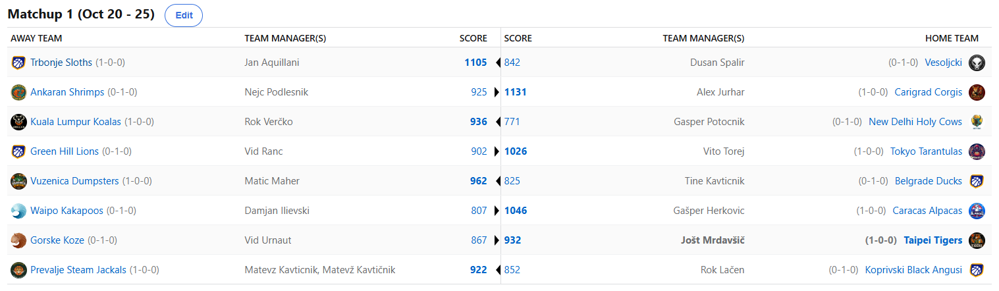

MATCHUP 1

Recap: MATCHUP 1
Kar 203 dni smo čakali na nov recap in tukaj je! Zaključen je 1. krog jubilejne 10. sezone NBA Fantasy Koroška, ki smo jo z nestrpnostjo
pričakovali že od piknika. Z nekaj prigovarjanja nam je vendarle uspelo ohraniti enako zasedbo kot lani, saj je Matevž iz svojega
besednjaka vrgel besedo »obupati« in raje izbral fresh start v drugi Koroški občini.
Ampak spodobi se, da začnemo pri lanskem zmagovalcu. Jole je z izjemno dominantnim playoffom, ko je povprečna razlika v končnici znašala reci-piši 585 točk,
končno prišel do 2. naslova prvaka. Jasno, pričakovanja v letošnji sezoni niso nič kaj nižja kot do sedaj, edini pravi cilj Tigersov je seveda postati šele
drugi manager z back-to-back naslovi. Dolgo je kazalo, da bo uvodni krog že razlog za prvi alarm, Urnautove Gorske Koze so namreč bile boljši nasprotnik
skozi večino tedna, a vendarle so se Tigersi prebudili še pravočasno, na krilih neverjetnega Donkeja izničili 88 točk prednosti v zadnjem dnevu in zabeležili
prvo zmago. Jole je s tem še zmago oddaljen od izenačitve rekorda za najdaljši winning streak, ki znaša 14 in ga zaenkrat še drži v rokah Cicko. Naslednji
nasprotnik bo Lačen, če pa bo želel rekord popolnoma vzeti iz rok Nejcu, pa bo moral še čez eno najvišjih ovir – Karakaške Alpake z mastermindom Herkovičem
na čelu.
Slednji nam je sicer v tem tednu zaupal, da zelo, zelo, zelo, slabo spi. Kakopak, poglaviten razlog insomnije pri managerju z najboljšo povprečno uvrstitvijo
v zgodovini pa izguba Scottija Barnesa na draft-day. Nič hudega sluteči Gašper, ki si je za nabor vzel celo pavzo med degustacijo vin, namreč nikakor ni
pričakoval, da mu bo v zelje skočil Rok Lačen in mu dobesedno pred nosom ukradel ljubljenčka. Majhen obliž na rane bo vsekakor rutinirana prva zmaga sezone,
ko roko na srce, Kakapoji niso bili na nobeni točki resno v igri za presenečenje. Damjan je po lanskih stopničkah tako precej slabo krenil v sezono, raznorazni
projectoni ga kar konstantno uvrščajo na dno powerrankingov, a kot vemo, sezona je dolga, budget za podpisovanje je dovolj visok in s pravimi potezami lahko
prav vsakdo spremeni svojo usodo in poseže po najvišjih mestih.
Zdaj ko smo premleli matchupe lanskoletnih stopničkarjev (in Urnauta, ker je bil pač tam), pa je na vrsti nekoliko manj uspešni manager – Ranac. Slednjega
bomo letos z neprestanimi flejmi poskušali toliko motivirati, da bo po povprečni uvrstitvi uspel prehiteti vsaj tiste, ki so z nami preživeli zgolj eno sezono.
Prejšnja leta je udarno začel, a potem popustil, tokrat pa se je odločil za drugačen pristop - slab začetek, dober konec. Ekipa ne izgleda slabo, a tokrat
je izgledala slabše od Tarantel. V obračunu prvega in drugega picka je bilj boljši slednji in Vito je zabeležil prvo zmago sezone. Rezerv je na Japonskem še
veliko in menimo, da bo Vito letos strah in trepet lige, če se mu njegov 4-man squad organizatorjev igre uspešno izogiba bolnišnic in uspešno dopolnjuje Jokića,
bodo vsekakor ti, sicer ogabni pajki, zelo težko premagljiv nasprotnik.
Ironično je, da je Miami Heat prvi teden sklenil z recordom 0-3, fantasy ekipa, ki je sestavljena iz njihovih playerjev, pa je zabeležila rutinirano zmago.
Očitno je sprememba maskote iz Klovnov na Smetkante dobro dela Maherju in Vuzenici. Seveda pa moramo vedeti, da proti ful
slabim tudi srednje slabi izgledajo dobri in morda je tudi ta matchup primer tipa Mateus Ponitka proti Sloveniji na Eurobasketu2022. Nasproti so mu namreč
stale Beograjske Račke. Slednje so bile očitno z glavo pri parlamentarnih volitvah v svojem domačem okolju, preostanek možganskih celic pa je pobrala nogometna
tekma Korotana. Tine je tako še četrtič zapored v sezono vstopil s porazom in skrbi ga lahko dejstvo, da je v teh primerih zabeležil 12., 9. in 12. mesto,
ko pa je uvodno tekmo dobil (2x) pa je bil vedno visoko, na 6. mestu.
Drvimo naprej in ko drvimo, je najbrž v bližini Rok Lačen, bodisi v tranziciji do drugega obroča, za volanom ali pa na smučeh. Tokrat nič od naštetega in tudi Koprivski Angusi
so po turbo začetku tedna proti koncu vedno bolj upočasnjevali. V tej neizprosni konkurenci si tega pač ne moreš privoščiti in zapravljivi Voka, ki je seveda glavni
razlog, da se je že v uvodnem tednu porabilo kar 382$ FA budgeta, je sezono otvoril s porazom. Cincanje so izkoristili Šakali, oz. bolj natančno Parni Šakali.
Če želite pojasnilo zakaj parni oz. steam, potem je približna razlaga bližina železniške postaje v kombinaciji s priljubljenostjo iQosa v njihovih vrstah.
Kakorkoli, selitev z Brdinj na Prevalje je anonimnemu ultrasu Matevžu očitno dobro dela in namesto pokoja in hiše slavnih, je udarno vstopil v novo sezono
in v želji po smešnem gobcanju, mu na tej točki želimo dokaj uspešno sezono. Smo pa iz zanesljivih virov izvedeli, da je bilo ponoči pri Matonu kar v spanju
slišati »Plavi, Plavi«. Očitno ga je zelo prizadelo, da se ni uspel udeležiti pokalne tekme svojega ljubega Korotana.
Lenivci s Trbonj pa niso nič kaj leno vstopili v novo sezono. Jan AQUILLANI, sicer nogometni trener, je očitno ponovno pripravil dobro strategijo za nabor in
na krilih SGA-ja je brez večjih težav odpravil Vesoljčke. Načeloma gre za Vesele Vesoljčke, a ob skromnih 842 točkah ta pridevnik pač izgine. Dule, ki je
medtem že izgubil Paola Banchera, po usage ratu primerljivega igralca z Đustijem na rekreacijah v Coca Cola Areni, pa je še en boleč poraz zabeležil tudi v petek, ko je v obračunu stari
vs mladi bil odpravljen z rutiniranih 4-1.
Prava mala sramota je, da v dvoboju Freda in Cicija ni bilo nobenih verbalnih spopadov. Kot da na tehtanju pred boksarskim obračunom nihče ne bi pokazal vsaj
sredinca nasprotniku. Kot da Viniciusa na El Classicu nihče ne bi zmerjal z opico. Enostavno nepredstavljivo. No kakorkoli, zmago je z najvišjim scorom tedna
zabeležil Aleks, ki je s tem tudi prevzel virtualno vodstvo v boju za 10€, a jasno, držal ga bo zgolj še do nedelje, ko mu ga iz rok ukrade nekdo po prvem
polnem tednu fantasyja. Kaj na drugi strani reči za Nejca? Še sreča da so mu teden sladkali kakiji in granatna jabolka, kajti na fantasy področju je vsekakor
bilo bolj grenko. Se bo njegov starački dom prebudil šele decembra, ko jim Janša uvede 100% pokojnino ob plači, kaj prej, ali sploh ne? Bomo videli!
Še zadnji obračun, ki nam je ostal, pa je potekal med Gepsovimi Svetimi Kravami in Veratijevimi Koalami. Slednje so letos nadgradile vizualni izgled moštva,
a kot kaže je nekaj sredstev ostalo tudi za sam igralski kader. Gladka zmaga je vsekakor dober znak, ampak skrbi, oz. ne skrbi, kajti tako rekoč jasno je,
da so medtem že izgubili Jalena Williamsa za celotno sezono. Velik udarec za Koale, sicer momentalno namesto v Maleziji nastanjene v Kozini. G€P$ svojega
valutnega nicknama letos še ni upravičil, a vsi vemo, da je le vprašanje časa. Sicer pa je po dolgem času na tier listah in powerrankingih visoko kotirajoči
Geps prav tako že doživel injury scare pri Cooper Flaggu, a očitno vendarle ne bo ostal brez njega za dlje časa, zgolj kakšno tekmo ali dve. Si lahko opomore in
zabeleži zmago proti svoji najljubši stranki – Maticu Maherju, ki ga zgodovinsko dominira že s kar 10-2 oz. 2877 razlike, oboje tudi momentalni rekord lige?
Ta zelo izčrpen recap zaključujemo z napovedjo drugega kroga …. Samo en matchup neporaženih ekip bomo videli in sicer Herko vs Mato, na drugi strani posledično
seveda le en obračun dveh poraženih ekip, udarila se bosta Tajn in Ura. Spremljamo tudi, ali bo lov na rekord za longest win streak še živ po tem tednu, v noči
na soboto pa bomo že spremljali tudi prve tekme letošnje izvedbe NBA Cupa!
Ne pozabite na predictione. Oz. naj formiram drugače: Ne pustite se 124x prosit za predictione in jih oddajte sami od sebe! Hvala in srečno vsem! LPLMJM